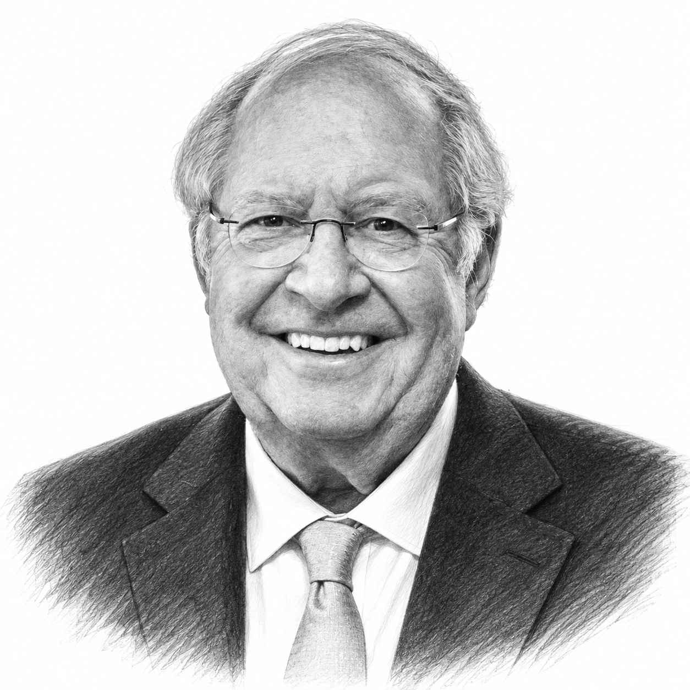
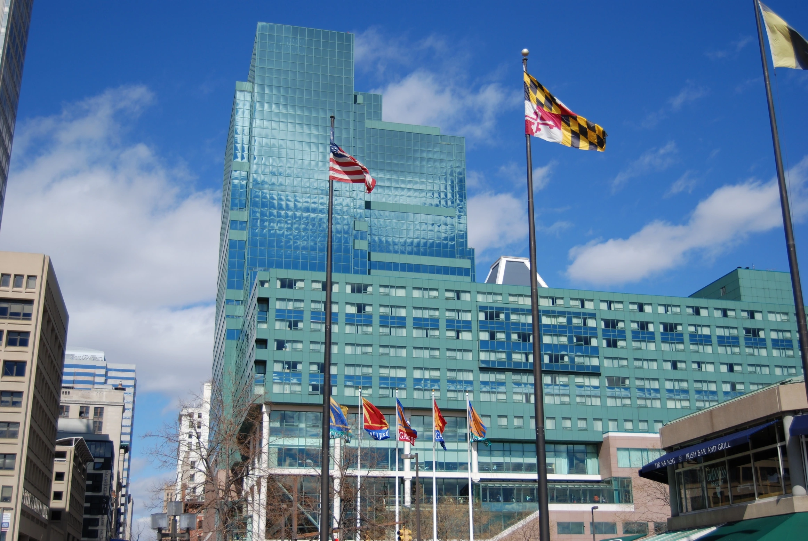
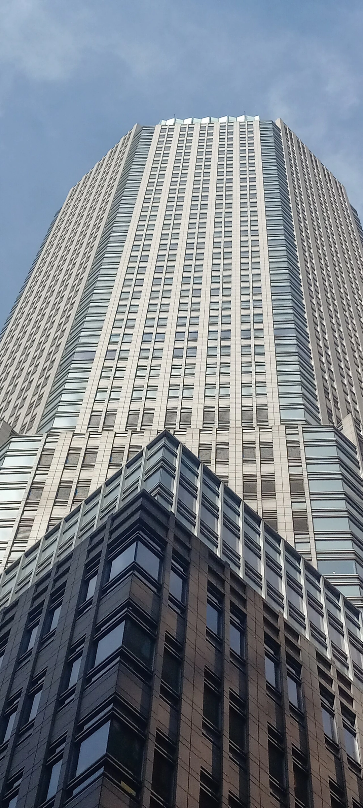

Bill Miller was born in 1950 in Laurinburg, North Carolina, and grew up in Florida, where his father was a terminal manager for a trucking company and where, as a teenager in the late 1960s, he put his earnings from umpiring baseball games into shares of RCA. He went on to Washington and Lee University in Virginia, graduating with honours in economics in 1972, although a single course taken there mattered more in the long run. "I had taken exactly one philosophy course in college, but it led me to read a lot more philosophy," said Mr Miller decades later.
Much of that reading was done in uniform, because after graduating Bill Miller served overseas as a military intelligence officer in the US Army, and it was while in Germany in the mid-1970s that he walked into a Munich brokerage and purchased shares in Intel. As his service ended he applied to the doctoral programme in philosophy at Johns Hopkins University in Baltimore, and although he left without the degree, he later credited "the analytical training and habits of mind" acquired there for much of his success. He then became treasurer of the J.E. Baker Company, a Pennsylvania manufacturer of products for the steel and cement industries, where he oversaw the company's investments.
Bill Miller joined Legg Mason, a Baltimore brokerage, in October 1981, having met its founder, Raymond "Chip" Mason, through his then wife. He was director of research until June 1985, and in April 1982 he and Ernie Kiehne launched Legg Mason Value Trust, which they ran together until Bill Miller took sole charge in December 1990, by which time the fund held around $750m.

The word "value" in the fund's name came to mean something different under Bill Miller from what most investors understood by it, because he refused to define a cheap share by a low multiple of earnings or book value. "Intrinsic business value is the present value of the future free cash flows of the business," he wrote in his letter for the fourth quarter of 2006, which meant that a company on a high price-to-earnings ratio could still be undervalued if its cash flows were going to grow for long enough. "We own low PE and we own high PE, but we own them for the same reason: we think they are mispriced," wrote Mr Miller, so that "the question is not growth or value, but where is the best value?"
The purchases that made this approach famous came in the mid-1990s, when most value managers would not touch technology, because Bill Miller purchased Dell at around five times earnings and America Online in late 1996, after reports of accounting problems had roughly halved its share price, and kept both as they rose far beyond what a conventional value screen would allow. By April 1999 America Online was 13.4% of the fund and Dell 6.4%, the two having risen roughly 30 and 40 times, and the fund held around $11bn. Morningstar named him its portfolio manager of the decade the same year.
However, Bill Miller was not an uncritical buyer of the internet, and in May 1999 he called internet shares "highly speculative and dangerous". The exception was Amazon, which he began purchasing in 1999 as the shares fell from $107 to $80 and kept purchasing as the price collapsed to $5.97 in September 2001, so that by the spring of 2002 the fund held more than 30m shares at an average cost of close to $30, and Amazon remained the investment with which his name was most closely linked for the rest of his career.

The record for which Bill Miller is best known is that Legg Mason Value Trust beat the S&P 500 in each of the 15 calendar years from 1991 to 2005. Over those years the fund returned 16.44% a year, compounded and after expenses of close to 1.8% a year, against 11.51% for the S&P 500 with dividends reinvested, according to figures Morningstar calculated for Fortune and the Wall Street Journal, so that $10,000 invested at the start of 1991 had grown to $98,079 by the end of 2005, whereas the same sum in the index would have become $51,354. The margins were sometimes thin, because in 2002 the fund lost 19% while the index lost 22%, and because the comparison was made only on calendar years, an investor who purchased at another point could have had a very different experience.
"There was, of course, a lot of luck involved in the streak," wrote Mr Miller in early 2007, and although "there was probably some skill involved" too, he observed that odds of one in 2.3 million, the figure his colleague Michael Mauboussin had put on such a run, were odds that "happens to about 130 people per day in the US". Similarly, because most of the money arrived after the fund had been winning for years, Morningstar estimated that the average dollar invested in Legg Mason Value Trust earned 11.34% a year over 1991 to 2005, roughly five percentage points below the fund and fractionally below the index.
The streak ended in 2006, when the fund was up just 6.7% by late in the year against 16.5% for the S&P 500. "The streak ended because all streaks eventually end, and because we made some mistakes," wrote Mr Miller, naming "not being invested in energy in 2003 when it was cheap" and "being too concentrated when concentration added no value". By then Legg Mason Value Trust held around $21bn, he was also running Legg Mason Opportunity Trust, a more concentrated fund launched on 30 December 1999 that had grown to $6.7bn, and from 2005 to 2009 he chaired the Santa Fe Institute, a New Mexico research centre for complex systems.
However, the mistakes of 2006 were small ones compared with what followed, because as credit markets seized up in 2007 Bill Miller did what had worked for him for 25 years and purchased the shares that were falling fastest. In the final quarter of 2007 the fund added Bear Stearns, Freddie Mac, Washington Mutual, Wachovia and Merrill Lynch to existing positions in Countrywide Financial and AIG, and his letter for that quarter concluded that "financials appear to have bottomed." On Friday 14 March 2008 he purchased more Bear Stearns at just over $30 a share, down from a high of $154, and that weekend the bank was sold to JPMorgan in a deal first valued at $2 a share, yet his letter for the quarter, in which the strategy fell roughly 19.7% against 9.4% for the index, judged that "by far the worst is behind us."

It was not, because by the end of June 2008 Bill Miller's funds held 53m shares of Freddie Mac, around 8% of the company, and on 7 September the US Treasury took Fannie Mae and Freddie Mac into conservatorship, leaving shares that had started the year at $34 trading below $1, while AIG, to which he had added in the second quarter, went from $24 the day after the seizure to $1.85 eight days later. He had sold Washington Mutual and Wachovia earlier in the year on worries about their capital, but the pattern was the same throughout, because these were businesses whose value depended on access to funding rather than on the cash flows of an ordinary company, and a low price against book value offered no protection once that funding disappeared.
His own account of the year did not spare him, and "I had been wrong to underestimate the crisis and wrong to be bullish too early," he wrote to shareholders that autumn, telling them: "We have not met your expectations or our own, and we apologize for that." In December 2008 he told the Wall Street Journal that "the thing I didn't do, from Day One, was properly assess the severity of this liquidity crisis", adding simply: "I was naive." Legg Mason Value Trust lost 55.1% in 2008 against a 37.0% fall for the S&P 500, and its assets fell from $16.5bn to $4.3bn in twelve months as losses and redemptions compounded one another. This was not a case of good shares falling with the market, because several of the companies concerned were wiped out, so that it was a mistake about which businesses can be valued on a recovery thesis at all.
Bill Miller stayed on, and the fund gained 41% in 2009, ahead of the index, but it trailed again in 2010 and 2011, and over the five years to the end of 2010 it ranked last among 1,187 US large-company funds tracked by Morningstar, so that in November 2011 Legg Mason announced that he would hand the fund to Sam Peters with effect from 30 April 2012, its 30th anniversary, by which time it held $2.8bn. Over his whole tenure as sole manager, from December 1990 to the end of 2011, the fund returned 9.39% a year against 9.14% for the S&P 500, according to Morningstar, which is the figure that puts the streak and the collapse together, and it is a record of the past rather than a forecast.
He kept Legg Mason Opportunity Trust, and in August 2016 Legg Mason agreed to sell him its half of LMM, the joint venture that ran it and a smaller income fund, a buyout completed in February 2017, after which the business became Miller Value Partners. There Bill Miller ran money with a concentration he had never permitted himself at Legg Mason, because his hedge fund had purchased bitcoin in 2014 and 2015 at prices between $200 and $500, and by December 2017 a position that began at 5% of the fund had grown to half of it. "One of the things we try to do is to have an open mind, especially about new technologies," said Mr Miller, and by December 2021 he said that more than half of his personal wealth was in bitcoin and related investments and most of the rest in Amazon, although a personal portfolio concentrated in two assets is not comparable with a diversified fund.

The philosophy student was never far away, and in January 2018 Bill Miller gave $75m to the philosophy department at Johns Hopkins, which was renamed the William H. Miller Department of Philosophy, believed to be the largest gift ever made to a university philosophy programme, and in October 2024 he gave $132m to Washington and Lee so that it could admit undergraduates without regard to their ability to pay. "Your financial circumstances, however modest, will not prevent you from attending W&L," said Mr Miller.
Bill Miller announced at the start of 2022 that he would retire from fund management, and on 30 December 2022 he ceased to be a portfolio manager of Miller Opportunity Trust, which was renamed Opportunity Trust and continued under Samantha McLemore, its co-manager since 2008, through her own firm, Patient Capital Management. Miller Value Partners kept the Miller Income Fund under his son, Bill Miller IV, and in May 2023 Bill Miller stepped down as the firm's chairman and chief investment officer, so that as of October 2026 the firm continues under his son while Bill Miller, now 76, is chairman emeritus of the Santa Fe Institute and a trustee of Johns Hopkins. The returns of Legg Mason Value Trust after April 2012 belong to other managers, whereas the 15-year streak and the 55% loss belong to him.
The record
| Period or year | Legg Mason Value Trust | S&P 500 | Basis |
|---|---|---|---|
| 1991–2005, compounded annually | 16.44% | 11.51% | After fund expenses (close to 1.8% a year); index with dividends reinvested; Morningstar for Fortune |
| 1991–2005, $10,000 invested | $98,079 | $51,354 | Morningstar for the Wall Street Journal |
| 1991–2005, average dollar invested | 11.34% a year | 11.51% a year | Morningstar estimate of investor (dollar-weighted) return |
| 2002 | −19% | −22% | Bloomberg report, calendar year |
| 2006 (to late in the year) | +6.7% | +16.5% | Bloomberg report; the first calendar year since 1990 the fund trailed |
| 2008 | −55.1% | −37.0% | Morningstar, calendar year, after expenses |
| 2009 | +41% | ahead of index | Bloomberg report |
| December 1990–end 2011, compounded annually | 9.39% | 9.14% | Morningstar, after expenses, sole-manager tenure |
| Assets, 1990 | around $750m | Bloomberg | |
| Assets, peak 2006–07 | around $21bn | Bloomberg ($21bn, 2007); Wall Street Journal ($20.8bn, 2006) | |
| Assets, December 2008 | $4.3bn | Morningstar, from $16.5bn a year earlier | |
| Assets, November 2011 | $2.8bn | Bloomberg |
These are the returns of Legg Mason Value Trust, in US dollars and after the fund's expenses, as reported by Morningstar and Bloomberg in contemporary coverage; the fund's own annual reports from the period were not consulted and the figures have not been reconciled to a single share class. The streak is a calendar-year comparison and says nothing about other holding periods. Legg Mason Opportunity Trust, which lost 65.5% in 2008, and Bill Miller's later funds and personal holdings are separate records. Asset figures measure money flowing in and out as well as performance. The fund's returns after 30 April 2012 belong to its successor managers. None of these figures is a forecast.
Life in dates
- 1950Born in Laurinburg, North Carolina; grows up in Florida.
- 1972Graduates with honours in economics from Washington and Lee University; joins the US Army as an intelligence officer.
- Mid-1970sLeaves the Army and enters the philosophy PhD programme at Johns Hopkins University, which he leaves without the degree.
- Before 1981Treasurer of the J.E. Baker Company in Pennsylvania.
- 1981Joins Legg Mason in October as director of research.
- 1982Legg Mason Value Trust launched in April; co-manages it with Ernie Kiehne.
- 1986Earns the CFA designation.
- 1990Becomes sole manager of Legg Mason Value Trust in December, with around $750m in the fund.
- 1991First of 15 consecutive calendar years ahead of the S&P 500.
- 1996Purchases Dell and America Online.
- 1999Begins purchasing Amazon; named Morningstar's portfolio manager of the decade; Legg Mason Opportunity Trust launched on 30 December.
- 2005Fifteenth consecutive year of outperformance. Becomes chairman of the Santa Fe Institute, serving until 2009.
- 2006The streak ends; fund assets around $21bn.
- 2007Purchases Bear Stearns, Freddie Mac, Washington Mutual, Wachovia and Merrill Lynch in the fourth quarter.
- 2008Purchases Bear Stearns at just over $30 on 14 March; Freddie Mac is nationalised on 7 September; Legg Mason Value Trust loses 55.1% and Legg Mason Opportunity Trust 65.5% over the year.
- 2009The fund gains 41%, ahead of the S&P 500.
- 2011Legg Mason announces in November that he will hand over Value Trust.
- 2012Sam Peters takes over Legg Mason Value Trust on 30 April.
- 2014–15His hedge fund purchases bitcoin at $200 to $500.
- 2016Agrees in August to buy Legg Mason's half of LMM.
- 2017Buyout completed in February; the firm becomes Miller Value Partners.
- 2018Gives $75m to the Johns Hopkins philosophy department on 16 January.
- 2022Announces retirement from fund management in January; leaves Opportunity Trust on 30 December.
- 2023Steps down as chairman and chief investment officer of Miller Value Partners in May.
- 2024Gives $132m to Washington and Lee on 24 October.
Sources
- Miller Value Partners: Bill Miller, CFA (biography): Washington and Lee 1972, military intelligence, Johns Hopkins PhD programme, J.E. Baker, Legg Mason dates, Value Trust 1982 and December 1990, CFA 1986, Santa Fe Institute chairmanship 2005–2009, departure as chairman and CIO in May 2023.
- Bill Miller, 2006 Q4 market commentary: definition of value, "low PE and high PE", end of the streak, luck and the 1 in 2.3 million odds, 2006 mistakes.
- Bill Miller, 2008 Q1 market commentary: Bear Stearns and Countrywide, first-quarter 2008 fall of 19.7% against 9.4%, "by far the worst is behind us".
- Bill Miller, 2008 Q3 market commentary: "wrong to underestimate the crisis", apology to shareholders, Freddie Mac and AIG prices.
- Tom Lauricella, "How the world's best mutual-fund manager self-destructed", Wall Street Journal, 13 December 2008 (republished by the Post and Courier): "I was naive", the liquidity-crisis quotation, Florida upbringing, RCA and Intel purchases, Chip Mason, the 2007–08 financial purchases, Bear Stearns on 14 March 2008, Freddie Mac holding, assets $16.5bn to $4.3bn.
- Jason Zweig, "The Long Climb and Steep Descent of Legg Mason's Top Stock Picker", Wall Street Journal, 21 November 2011: $10,000 to $98,079 against $51,354, 9.39% against 9.14% since 1990, expenses of nearly 1.8%, assets $20.8bn in 2006.
- Allan Sloan, "Bill Miller had a great run. But did his investors?", Fortune, 7 December 2011: 16.44% against 11.51% for 1991–2005 and the 11.34% investor return, Morningstar data.
- Motley Fool, "The worst mutual funds of 2008", 6 January 2009: Value Trust −55.1% and Opportunity Trust −65.5% in 2008, Morningstar data.
- InvestmentNews, "Half mast: Legg Mason's Bill Miller stepping down from flagship fund" (Bloomberg): handover to Sam Peters effective 30 April 2012, assets $21bn peak and $2.8bn, 2009 and 2010 returns, "April 2012 is the right time".
- Globe and Mail (Bloomberg), "S&P 500 finally gets the last laugh", late 2006: 2006 returns, 2002 and 2003 returns, assets $750m in 1990 and $21bn in 2006, Opportunity Trust $6.7bn.
- Christian Science Monitor, "Cashing in on the undervalued", 3 May 1999: America Online and Dell weightings and gains, assets around $11bn, quotations on cash flow and internet shares.
- Money, "Q: Bill Miller", 21 May 2002: Amazon purchases from 1999, share count and average cost, America Online purchase in late 1996.
- Legg Mason Opportunity Trust quarterly report, March 2007 (SEC filing): inception date of 30 December 1999.
- InvestmentNews, "Legendary mutual-fund manager Bill Miller cuts ties with Legg Mason", 12 August 2016: LMM sale, $1.8bn, funds involved.
- Investment Week, "Bill Miller rebrands fund range as LMM buyout completes", 27 February 2017: completion of the buyout of Legg Mason's 50% stake.
- Market Folly, "Bill Miller has 50% of hedge fund in bitcoin: WealthTrack interview", 18 December 2017: bitcoin purchases in 2014–15 at $200 to $500, 5% to 50% of the fund, "open mind" quotation.
- The Block, "Bitcoin and related investments now make up half of Bill Miller's personal portfolio", 10 January 2022: WealthTrack interview, "170% every year" quotation, Amazon as the other half.
- Johns Hopkins Hub, "Bill Miller's $75 million gift", 16 January 2018: gift details, renaming, faculty growth, one philosophy course, Army service, "analytical training" quotation.
- Washington and Lee, "Historic gift allows Washington and Lee University to adopt need-blind admissions policy", 24 October 2024: $132m gift and quotation; biography.
- Trust for Advised Portfolios, Form 497K supplement, 19 December 2022 (SEC): Bill Miller III ceases as portfolio manager on 30 December 2022; Samantha McLemore continues; fund renamed Opportunity Trust.
- Validea, "Bill Miller retires from fund management", 9 January 2023 (citing Citywire): retirement announced at the start of 2022, Patient Capital, Bill Miller IV and the Miller Income Fund.
- Morningstar Australia, "Forget growth vs. value; look for 'best value'", 8 March 2018: Morningstar portfolio manager of the decade 1999, Dell at around five times earnings, last of 1,187 funds over five years to 2010.
- Wikipedia: Bill Miller (investor)): birth in Laurinburg, father's occupation, Army dates 1972–75, leaving Johns Hopkins without the degree. Secondary source; flagged.